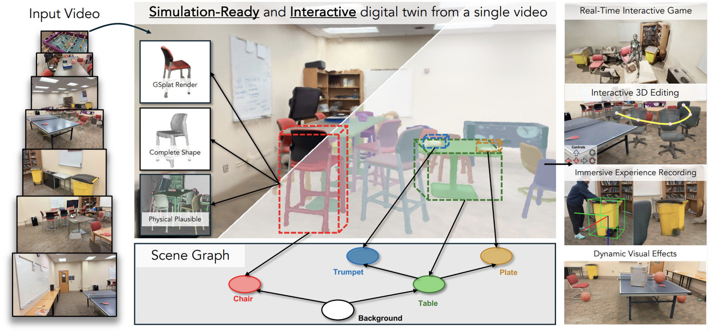
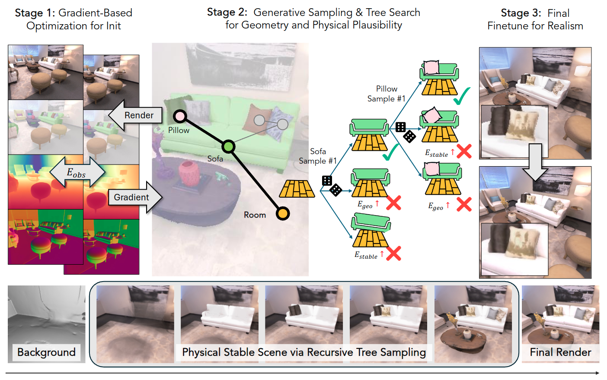
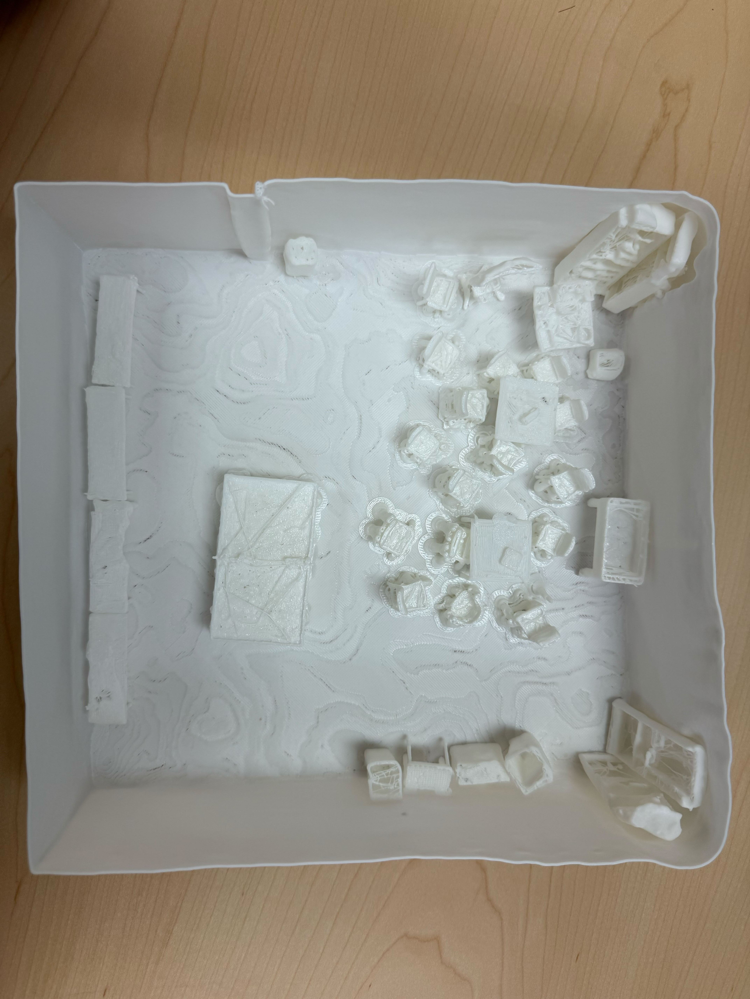
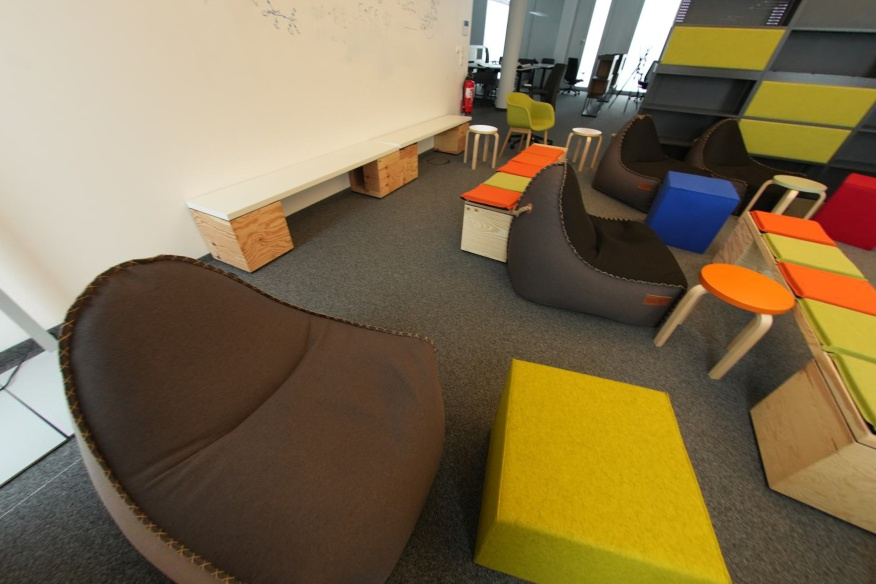
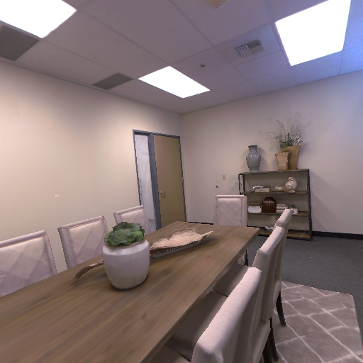
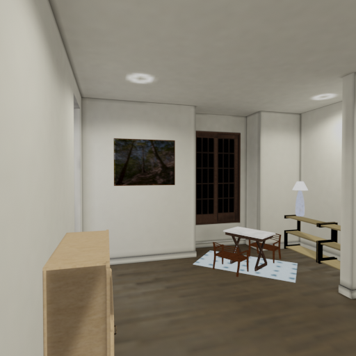

- Hongchi Xia1
- Chih-Hao Lin1
- Hao-Yu Hsu1
- Quentin Leboutet2
- Katelyn Gao2
- Michael Paulitsch2
- Benjamin Ummenhofer2
- Shenlong Wang1
- 1University of Illinois at Urbana-Champaign
- 2Intel
NeurIPS 2025

Abstract
Digitizing the physical world into accurate simulation-ready virtual environments offers significant opportunities in a variety of fields such as augmented and virtual reality, gaming, and robotics. However, current 3D reconstruction and scene-understanding methods commonly fall short in one or more critical aspects, such as geometry completeness, object interactivity, physical plausibility, photorealistic rendering, or realistic physical properties for reliable dynamic simulation. To address these limitations, we introduce HoloScene, a novel interactive 3D reconstruction framework that simultaneously achieves these requirements. HoloScene leverages a comprehensive interactive scene-graph representation, encoding object geometry, appearance, and physical properties alongside hierarchical and inter-object relationships. Reconstruction is formulated as an energy-based optimization problem, integrating observational data, physical constraints, and generative priors into a unified, coherent objective. Optimization is efficiently performed via a hybrid approach combining sampling-based exploration with gradient-based refinement. The resulting digital twins exhibit complete and precise geometry, physical stability, and realistic rendering from novel viewpoints. Evaluations conducted on multiple benchmark datasets demonstrate superior performance, while practical use-cases in interactive gaming and real-time digital-twin manipulation illustrate HoloScene's broad applicability and effectiveness.
Framework Overview
Given multiple posed images as well as some visual cues (instance masks, monocular geometry priors), we first employ a gradient-based optimization as the initialization.
Then we adopt a generative sampling and tree search strategy along the topology of the scene graph to obtain the complete geometry with physical plausibility.
Finally, the final fine-tuning over the scene further enhances the realism of the reconstructed scene.

Watch our 3D Textured Object Visualization Here! (Click Load to start the visualization!)
Interactive 3D viewer for reconstructed objects. Drag to rotate, scroll to zoom, and toggle object visibility below.
Select Scene:
Object Visibility Controls:
Interactive 3D Editing
In our simulation environment, we could also achieve high-quality interactive 3D editing by moving the object Gaussians
with its underlying physical mesh geometry. Here we demonstrate this by changing the location and orientation of the interactable chair.
3D Printing of Reconstructed Scene
In order to demonstrate the geometry realism and physical plausibility of our reconstructed scene, we select our UIUC Siebel Game Room and print the reconstructed scene.
Here we show an overview image, video, and interactions of human-3d printed scene. All objects are movable, and we selected some objects to show the interactions.
(Thanks to the printout by Sydney Yu.)

Dynamic Visual Effects
To enhance immersion, we augment the scene with dynamic
visual effects, including rigid body simulations,
character animations, and particle effects. We
adopt visual effects from AutoVFX to
overlay virtual content and shadows onto the
image. As we can see from the following videos, we produce effects that
blend naturally with the scene.
Setting fire on the chair
Dropping box and balls
Insert animated characters
Immersive Experience Recording
We show our interactable reconstructed 3D objects with immersive experience recording.
Given a static RGB video of a person manipulating an object, we can recover the object's 6D pose and resimulate its motion in a virtual 3D scene.
Physical Simulation
We compare geometry layouts and
appearance within the physical simulation. HoloScene's complete, non-interpenetrating geometry remains stable in physics
simulators, unlike baseline methods. Our Gaussian on mesh delivers high-quality, real-time rendering
throughout the simulation process.
Scenes from Scannet++ dataset:

Ref Image
ObjectSDF
PhyRecon
DP-Recon
Ours
DP-Recon
Ours

Ref Image
ObjectSDF
PhyRecon
DP-Recon
Ours
DP-Recon
Ours
Scene from Replica dataset:

Ref Image
ObjectSDF
PhyRecon
DP-Recon
Ours
DP-Recon
Ours
Scene from iGibson dataset: DP-Recon fails to reconstruct the complete
background mesh, leading to object falling in the figure.

Ref Image
ObjectSDF
PhyRecon
DP-Recon
Ours
DP-Recon
Ours
Real-Time Interactive Game
We demonstrate our interactive game in Unreal Engine.
we build a third-person game with the reconstructed texture meshes.
The objects could be physically rearranged in the game world,
and the game agent could also interact with the scene through realistic physics.